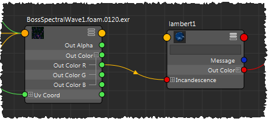

您可以使用 BOSS 生成贴图来表示海洋表面顶部的泡沫。
在生成的 EXR 文件中：
- 红色通道包含泡沫值。
- 绿色通道包含用于计算泡沫值的尖点值。这样就允许您对贴图执行后期处理，以便修改或生成您自己的泡沫值。
- 蓝色通道包含用于计算泡沫值的速度值。同样，这也允许您执行后期处理。
生成泡沫贴图
- 在“BOSS 涟漪/波浪生成器”(Boss Ripple/Wave Generator)窗口左侧的“波浪解算器”(Wave Solver)列表中，选择要为其启用泡沫的解算器。
- 在“属性编辑器”(Attribute Editor)中，在解算器属性的“泡沫属性”(Foam Attributes)组中激活“启用”(Enable)。
- 使用“泡沫扩散速率”(Foam Diffusion Rate)可控制泡沫值从生成泡沫的位置扩散到其他区域的速度。
- 使用“尖点比例”(Cusp Scale)、“尖点最小值”(Cusp Min)和“尖点最大值”(Cusp Max)可控制在波峰附近生成泡沫的方式。
- 如果需要，请激活“使用速度”(Use Speed)并调整“速度最小值”(Speed Min)和“速度最大值”(Speed Max)，以便根据速度限制泡沫生成区域。
- 缓存解算器。请参见缓存 BOSS 解算器和影响。
泡沫贴图使用与解算器相同的缓存路径和名称生成，并在文件名与帧编号之间添加了字符串
.foam. 。
- 将该贴图作为“文件”(File)纹理应用，并根据需要使用相应值驱动着色器参数。例如：

提示： 如果激活解算器的属性中的“导出缓存”(Export Cache)，则可在调整设置时获得有关泡沫值的交互式反馈。